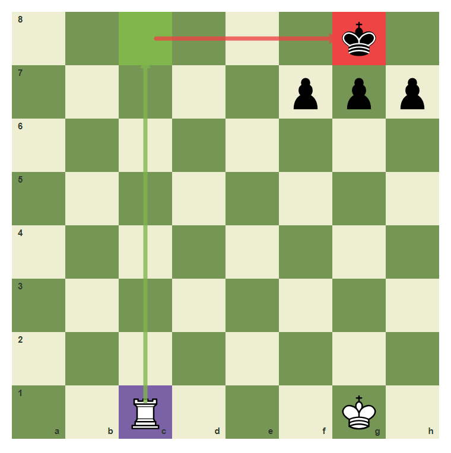
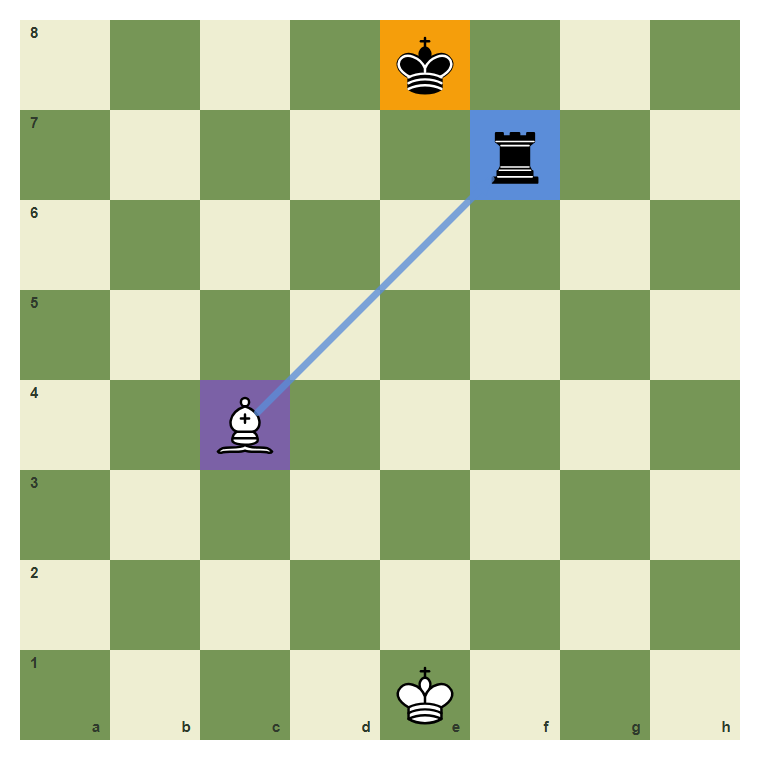
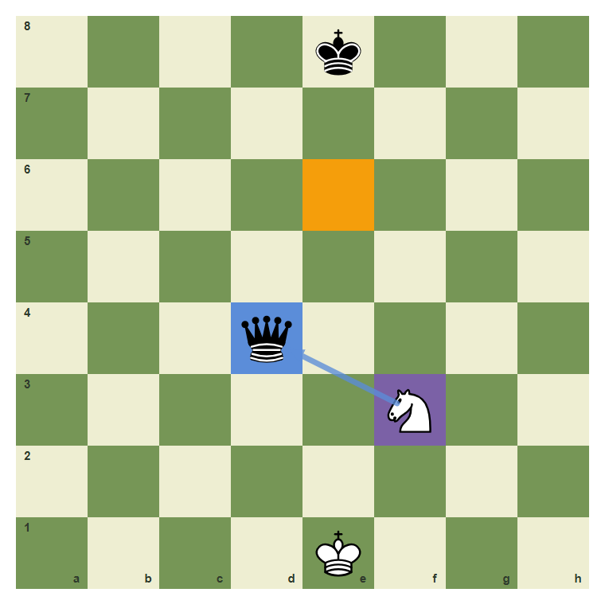
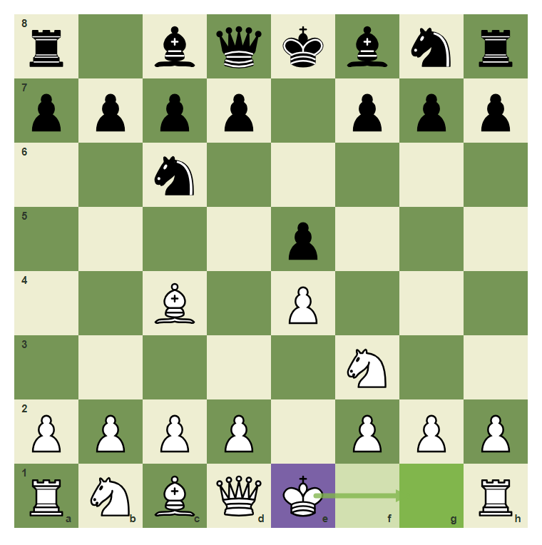
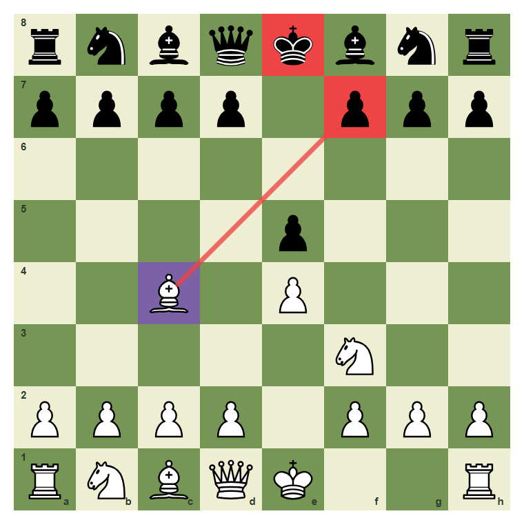
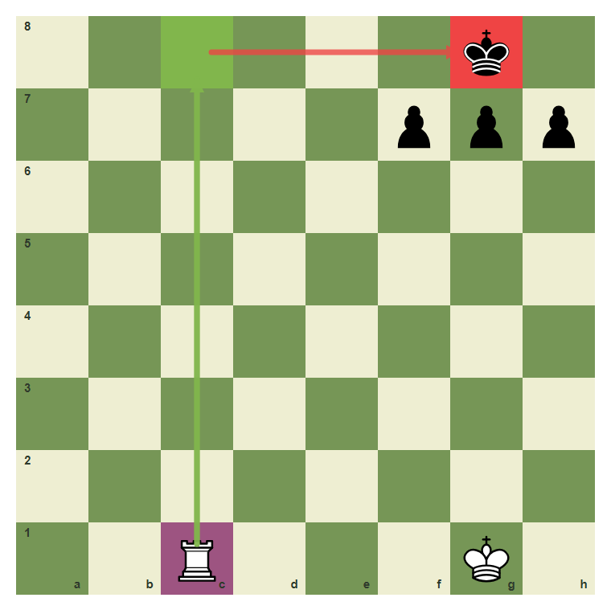

Quiet Moves
Quiet Moves converted into a repeatable Chess99 training habit.
- Recognize the visual signal for quiet moves.
- Choose a move or plan that fits quiet moves.
- Avoid the common beginner error connected with quiet moves.
- Pass a checkpoint without relying on guesswork.
Goal And Pattern
Quiet Moves is not a memory trick. It is a way to organize the position. First name the signal, then compare candidate moves, then choose the move that improves your position without creating a new weakness.
Training Diagram: main pattern

A rook reaches the back rank when the escape squares are boxed in. Study the highlighted relationship before reading the move.
Training Diagram: candidate move

The line to the target is clear, so the capture wins higher-value material. Study the highlighted relationship before reading the move.
Analysis And Decision
Use the diagram as a thinking board. Ask what is forcing, what is loose, and what changes after the move. Strong players do not only see a move; they see the reason the move works.
Training Diagram: comparison position

A high-value target changes the whole position when it is undefended. Study the highlighted relationship before reading the move.
Training Diagram: best practical choice

King safety often beats a tempting pawn grab or one-move threat. Study the highlighted relationship before reading the move.
Training Diagram: review position

Checks are forcing moves and should be examined before quieter ideas. Study the highlighted relationship before reading the move.
Try It: Find The Training Move
Play the highlighted move from c1 to c8. Do it only after saying the idea in words.
The guided move turns the diagram idea into a playable habit.
Common Mistake: Missing The Diagram Signal
The common mistake is to move by habit and miss the chapter signal. The diagram marks the useful move and the important target so the error is visible before it happens.

The marked relationship is the reason the natural careless move fails.
Chapter Checkpoint
Quiet Moves Check 1
What should you do first in a position about quiet moves?
Quiet Moves Check 2
Which answer best matches the chapter habit for quiet moves?
Quiet Moves Check 3
What is the biggest danger if you ignore quiet moves?